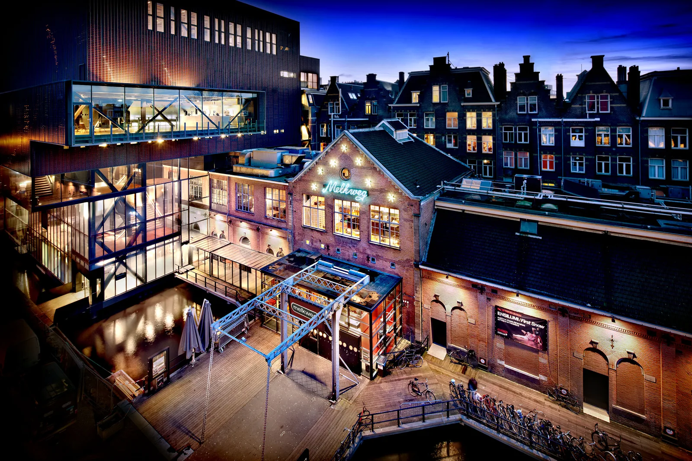

A ROOMOct 17, 2026
Across the Street
On Saturday 3 October Melkweg soft-opened Club Annie in the old Sugarfactory, Lijnbaansgracht 238, across from the room that has done ADE since 1996. The official open is a 30-hour weekender, 23 to 25 October. The pilot is two years. The phone rule is still a test.
The photograph is the old room. Green neon on the brick, the glass hall lit, bicycles on the bridge, the canal going under the building. That is Melkweg, shot by DigiDaan on 1 December 2009. Club Annie is the address across the street: Lijnbaansgracht 238, the building that used to be Sugarfactory and then Lovelee. ADE’s venue note, published Friday 9 October and written by Meike Jentjens, says the soft open was the Saturday before that filing. The Saturday before 9 October was the 3rd.
Melkweg had already said, on 17 September, that October would bring a club and a concert room at that address. Managing director Laura Vogelsang’s line in that note is about space: the point of Annie, she said, is room for new makers to build an audience “especially now, when space for experimentation is under pressure.” The building had been empty for about a year when Melkweg got another chance at it. Grolsch is named as part of how the door got paid for. Fridays and Saturdays are the club, under the name Annie. The other nights are concerts, under the name ANN. Tiffany Day, Chrissy Chlapecka, and Politie Warnsveld were among the first shows confirmed.
Thirty hours, and a month to book them
The public open is Annie’s ADE weekender: Friday 23 October at 23:59 through Sunday 25 October at 6 in the morning. Thirty hours. Programmer Milou Zoer told Jentjens the team had only just been given the green light to do the opening during ADE, which left her about a month to book it. “We got the word that we have 30 hours for our ADE weekender, which is the programmer’s dream,” she said. “It’s super difficult to come up with a good story, but also really fun.” She had been looking at the rest of the city’s lineups while she booked, and what she noticed was how many of them were still short on women. Annie’s first ADE, she said, would have predominantly female headliners, long sets, back-to-backs, surprise guests, and sounds put next to each other on purpose. “I want it to be a weekend full of wonder. That element of surprise is what the club is.”
The timetable Melkweg has posted splits the thirty hours into three blocks. Friday night into Saturday morning: angelboy, sim0ne, Justin Tinderdate with Elotrance, LESSSS, Bebe Bad, ZUKE. Saturday daytime into evening: MCR-T, MOMANNA, iMarly, Tina Turnup, KAHORSA, FJUSHA, Ratkapje. Saturday night into Sunday morning: PARALICH, Evissimax, M¥SS KETA, $HOKI287, DBBD with DJ Sexstasy, TOCCORORO. The hours match on the English page and the Dutch page. The copy also leaves a blank where a surprise guest would go.
Three editions before anyone has to be good
Annie is a two-year pilot, and Zoer has been calling it a makers’ house. Young collectives get at least three editions to develop a night, with Melkweg’s production, tickets, and crew behind them. A quiet edition still leaves the residency standing. “Everyone gets the chance to grow,” she said. “Because of the high costs and the big risks of organizing, there’s very little room to really find a home somewhere and grow. Here, we do offer that part of the deal.” The residents already named by Melkweg are PAARDENRAVE, The Late Night Show, Da Funkshun Nightmarket, LIEVER LESBIES, and PYXLS. The first club nights on the September list were LIEVER LESBIES, PAARDENRAVE, and the ADE weekender.
Zoer wanted the room to feel less like the clubs she already knew. “Clubs are often quite linear and masculine,” she said, and she described the missing thing as softer, more sensual, more playful. The name has several possible aunts: Annie Sprinkle, Annie Oakley, Annie M.G. Schmidt, or a hairdresser, or the woman opposite you on the tram. Creative director Davy de Lepper’s word for it is “very campy.” The staff, Jentjens reports, have started talking about what she wants. The phone policy is one of the things she has not decided. They are testing it. If it works, it stays.
The room that was already there in 1996
Melkweg was one of the three nighttime venues at the first ADE, in 1996, with Paradiso and Escape. De Lepper tried to reconstruct exactly how the building joined that first year and told Jentjens the details have gone, even inside the organisation. What survived is the habit. He calls a night at Melkweg “total theatre”: faces on the floor, the social life, the clothes, the music. Zoer, who grew up in Friesland and was twelve the first time she came, says Melkweg is always looking for the edges. The neon in the 2009 photograph is that habit, still switched on. The experiment is the address you reach by crossing.
Opening a club in Amsterdam in 2026 is a financial argument before it is a romantic one. The September note and the October profile both say so, in different sentences: costs are high, rooms are disappearing, and a bad night can end a collective. Annie’s answer, on paper, is three tries, a two-year lease on the idea, and a weekender long enough that the lineup has to change shape while you are still inside. The soft open already happened, on the 3rd, with two weeks to settle before the 23rd. The frame with a name in lights is still the one across the water.
Sources
- Amsterdam Dance Event, “30 YEARS ADE Iconic Venues – Melkweg: From 30 years of ADE to Club Annie” (Meike Jentjens, 9 October 2026): https://www.amsterdam-dance-event.nl/en/news/30-years-ade-iconic-venues-melkweg-from-30-years-of-ade-to-club-annie/2927719/
- Melkweg, “Melkweg welcomes Club Annie” (17 September 2026): https://www.melkweg.nl/en/news/melkweg-welcomes-club-annie/
- Melkweg, Annie’s ADE weekender, 23–25 October 2026: https://www.melkweg.nl/en/agenda/opening-club-weekender-23-10-2026/